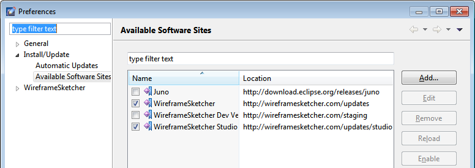

WireframeSketcher is based on Eclipse platform which means that you can extend it with various Eclipse plugins. One common requirement is the installation of version control plugins for Subversion, Git, Team Foundation Server, Perforce, Mercurial, Plastic SCM and others.
To install version control plugins like Subclipse, Subversive, eGit, P4Eclipse (Perforce), Mercurial, Team Foundation Server (TFS), SourceAnywhere and others follow these steps:
1. Enable Juno update site using Window > Preferences > Install/Update > Available Software Sites:

2. Install the plugin from its update site using Help > Install New Software…. WireframeSketcher is based on Eclipse Juno (3.8) if you need to know.